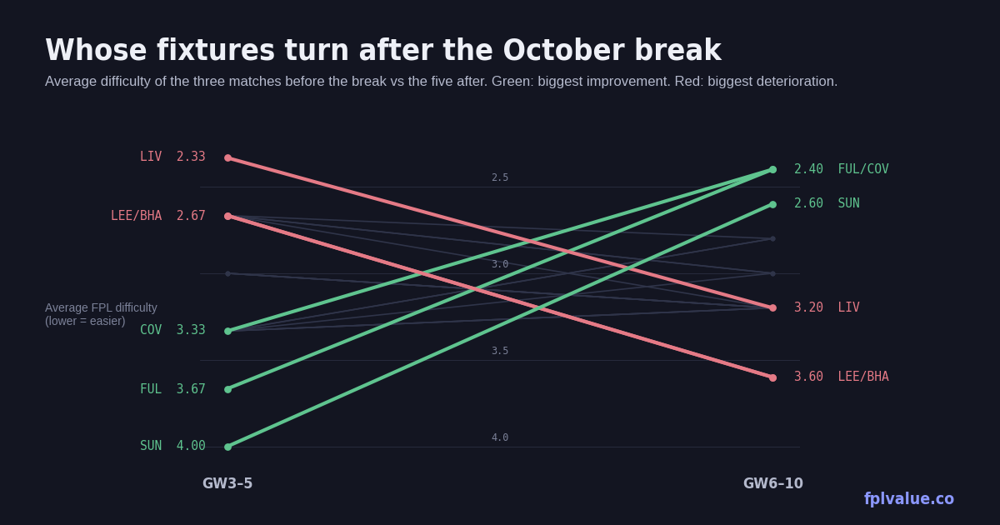

Whose run turns easy after the October break
The first international break falls after GW5, and for most managers it's the natural point to reshape a squad — or play a wildcard. This piece uses the fixture planner to find the teams whose difficulty drops most between GW3–5 and GW6–10, the longest easy runs in the calendar, and the teams whose fixtures do the opposite.

Difficulty is FPL's official rating, 1 (easiest) to 5. A "swing" is the change in average difficulty between the three matches before the break and the five after it. Anything at or under 3 counts as a fixture you'd happily field a player for.
Five teams whose fixtures ease from GW6
| Team | GW3–5 | GW6–10 | Swing | GW6–12 | First seven after the break |
|---|---|---|---|---|---|
| Sunderland | 4.00 | 2.60 | −1.40 | 2.86 | BHA(H) BOU(A) LEE(H) COV(A) CHE(H) AVL(A) TOT(H) |
| Fulham | 3.67 | 2.40 | −1.27 | 2.86 | IPS(A) HUL(H) COV(A) AVL(A) NEW(H) MCI(A) BOU(H) |
| Coventry | 3.33 | 2.40 | −0.93 | 2.57 | NEW(H) TOT(A) FUL(H) SUN(H) EVE(A) CRY(H) LEE(A) |
| Bournemouth | 3.33 | 2.80 | −0.53 | 2.86 | CHE(A) SUN(H) MUN(A) LEE(H) IPS(A) NFO(H) FUL(A) |
| Arsenal | 3.33 | 2.80 | −0.53 | 3.00 | LEE(H) NFO(A) EVE(H) LIV(A) HUL(H) NEW(A) MCI(H) |
Sunderland have the hardest run in the league right now — Brentford away, Arsenal at home and Man City away is a 4.0 average, as bad as it gets — and then the calendar flips completely: Brighton, Bournemouth, Leeds and Coventry in a row, all rated 2 or 3. That is the biggest swing of any team, and it comes exactly when the break gives you free transfers to act on it. Their defenders are the obvious play; whoever is starting up front is the speculative one.
Fulham are a similar shape with an even softer landing: Ipswich away, Hull at home and Coventry away are three of the four easiest fixtures any team can be given, and they arrive as a block in GW6–8. Their attackers are more appealing than Sunderland's on quality; Gonzalo at £6.0m has 1.02 xGI already and would be the cheapest route in. The Man City trip in GW11 is the one to plan around.
Coventry deserve a closer look than their promoted status suggests, and they're the subject of the next section.
The longest easy runs in the calendar
Swing measures the change; this measures the destination. Counting consecutive fixtures rated 3 or under from GW6 onwards — the kind of run where you can set a player and forget about him — three teams stand out.
| Team | Easy run | From | Fixtures |
|---|---|---|---|
| Ipswich | 10 | GW8–17 | ten straight fixtures at 3 or under |
| Brighton | 9 | GW10–18 | nine straight |
| Coventry | 8 | GW6–13 | NEW(H) TOT(A) FUL(H) SUN(H) EVE(A) CRY(H) LEE(A) IPS(H) — starts immediately after the break |
| Bournemouth | 6 | GW9–14 | |
| Fulham | 6 | GW12–17 |
Coventry's run is the one that lines up with the break. Eight consecutive fixtures at difficulty 3 or below from GW6, the lowest average of any team over GW6–12 at 2.57, and no fixture harder than a 3 until Man City in GW14. For a promoted side the question is whether their players can score points against anyone, and after two weeks the honest answer is not yet — they've lost both games and no Coventry player has more than 11 points (goalkeeper Thomas, at £4.0m, is the exception that makes the point). But at £4.0m–£4.5m their defenders will be the cheapest in the game with the best fixtures in the game, and that combination is usually worth a bench slot regardless.
Ipswich's ten-match run from GW8 to GW17 is the longest stretch of soft fixtures anywhere in the season, but the break is slightly early for it: GW6 is Fulham at home (a 2) and GW7 is City away (a 5). If you're wildcarding at GW6, Ipswich are a second-wave move for GW8, not a first-wave one. Brighton are the opposite problem — their good run doesn't start until GW10 and they play Liverpool and City back-to-back in GW8–9. De Cuyper, who leads all defenders on xGI, is a hold through that and a strong buy for anyone getting in later.
Three teams to move off before the break
| Team | GW3–5 | GW6–10 | Swing | First seven after the break |
|---|---|---|---|---|
| Leeds | 2.67 | 3.60 | +0.93 | ARS(A) MUN(H) SUN(A) BOU(A) TOT(H) CHE(A) COV(H) |
| Brighton | 2.67 | 3.60 | +0.93 | SUN(A) CRY(H) LIV(A) MCI(A) BRE(H) HUL(A) NEW(H) |
| Liverpool | 2.33 | 3.20 | +0.87 | MCI(H) BRE(A) BHA(H) ARS(H) CRY(A) MUN(H) EVE(A) |
Liverpool have the easiest three fixtures in the league before the break — Ipswich away, Fulham at home, Bournemouth away, a 2.33 average — and then City, Arsenal and United all inside six weeks. Nobody sells Liverpool's premiums on fixtures alone, and Isak's 2.09 xGI says the underlying performance is there whatever the scoreboard says. But for the mid-priced Liverpool midfielders the template is loading up on (Szoboszlai at 42%, Gakpo the fastest riser), the break is where the fixture argument for owning them runs out. Leeds have the mirror image of Sunderland's schedule: soft until GW5, then Arsenal, United and a run where only Coventry in GW12 is rated below 3. Calvert-Lewin's 27% owners have a natural exit point.
Method: FPL's official fixture difficulty ratings from the fixtures feed, as shown on the planner. Swing = mean difficulty GW6–10 minus mean difficulty GW3–5. Easy run = consecutive fixtures rated ≤3 from GW6 (or the longest such streak between GW6 and GW20). FPL revises difficulty ratings during the season, so these will drift; the planner always shows the current values.